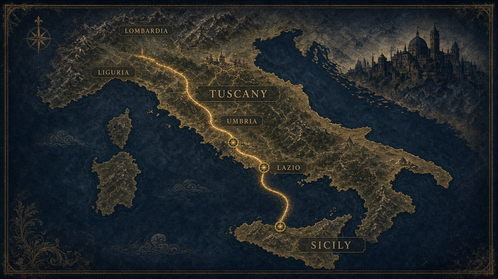

Ripasso · percorso
Sul tracciato del volgare
Sei tappe da Palermo alla Toscana. A ogni fermata: una domanda. Non è arcade: serve per ripassare.
Tappa 1/6
Punti 0

Ripasso · percorso
Sei tappe da Palermo alla Toscana. A ogni fermata: una domanda. Non è arcade: serve per ripassare.
